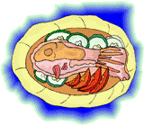
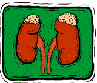
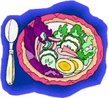

Introduction to Renal Nutrition |
|
|
When the kidneys fail:
| |
|
What the kidneys do:
|
 |
| Renal: "concerning the kidneys."Dialysis: the process of removing wastes and maintaining the chemical balance of blood when the kidneys no longer function. | Chronic kidney disease is divided into five stages. These stages are classified based upon the glomerular filtration rate (GFR), a measure of kidney function. The symptoms of kidney disease start to begin in Stage 3, when the GFR falls below 60 cc per minute. In this stage, the anemia, acidosis and bone disease begin. By Stage 4, when the GFR is less than 30 cc per minute, the appetite may start decreasing. It is in the fifth stage, when the GFR is less than 15 cc per minute, that the signs and symptoms of kidney disease worsen to the point that renal replacement therapy - dialysis or a kidney transplant - become necesessary. When your kidneys do not function well, you may have uncomfortable side effects such as a loss of energy, fatigue, irritability, trouble sleeping. Progressive kidney disease kidney diseases causes a loss of appetite. You may feel ill. As the disease progresses, one can feel nauseated, confused, delirious, and even slip into a coma. Since dialysis became readily available in the 1970s, the late stages of kidney failure have rarely been seen, but patients who miss dialysis treatments frequently often have some of the early signs of uremia. The loss of appetite in the stages of kidney disease that precede dialysis may lead to malnutrition. nausea, and high blood pressure. Dialysis removes waste products from the body and helps decrease these side effects. In hemodialysis, blood is removed from the body and passes through a plastic filter. Here it comes in contact with a solution of electrolytes (charged atoms needed by the body, but dangerous in excess). The blood that has been "cleansed" is then pumped back to the body. The dialysis and filtration process that is performed here removes, wastes and fluid while replenishing back the necessary electrolytes. In peritoneal dialysis, a plastic tube is surgically placed in the peritoneal space of the abdomen - the area that surrounds the intestines - and fluid is allowed to dwell in the abdomen and then drain out. This fluid is balanced, and thus removes the excess dangerous molecules and wastes while replenishing those elements that the body needs. Despites its ability to help sustain life and well being, dialysis is not as efficient as normal kidneys. For instance, it cannot remove phosphorus. Furthermore, while the kidneys are working steadily for twenty-four hours a day, standard incenter hemodialysis is generally performed three days a week, and there a waste products, as well as the acids, potassium, and sodium that build up between each treatment. For these reasons, dialysis patients need to watch their fluids, keep their blood pressure and serum phosphorus under control, and follow a special diet. The renal dietitian is specially trained to work with people with kidney disease. The dietitian works with you and your family to assure that prior to requiring dialysis, you receive a diet that will meet your needs while acocomodating your food preferences and lifestyle. As disease progresses, and dialysis becomes necessary, the dietitian will change your diet. Your diet plan may be modified periodically as your condition or type of dialysis changes. Your dietitian will keep you informed of any changes needed in your diet. |
| Your Special Diet
|
|
| REMEMBER! Your diet and fluid intake, your medications and your dialysis therapy are equally important. Develop a routine and stick with it to stay adherent to your treatment regimen. |  |
|||||||||||
|
CKD - Stage 1 - 4 When you are first found to have kidney disease, the goal will be to try to delay
the onset of kidney failure, prevent its complications (acidosis, anemia, worsening hypertension, bone/vascular
disease), and try to avoid the serious cardiovascular events common in CKD. The diet is a very important
part of this program. A "staying healthy diet" must be individualized based upon the underlying cause of your kidney disease. Fats, calories, carbohydrates, proteins, salt,
sugars, sodium, potassium and phosphorus may be modified. Your dietitian will help
you and your family make the necessary changes in your diet. Here are some resources.
|
|
|
Hemodialysis Your blood is cleaned several times a week with this type of dialysis therapy. Waste products, toxic minerals, and fluid build up in the period between treatment. Thus, it is important watch your closely when on dialysis. Most patients with kidney disease have hypertension, and should limit their salt intake. Fluid intake must also be reduced if your urine output has decreased. This is difficult to control, however, unless salt intake is limited. Potassium and phosphorus are minerals that are toxic to the body. At this stage, you need to be aware of foods that are high in phosphorus and in potassium. The USDA Nutrient Database will be very helpful. In most cases you will need to eat more protein than was allowed prior to receiving dialysis treatments. You will also need to eat enough calories to keep from losing "dry weight" unless otherwise planned with the dietitian. The standard daily hemodialysis diet contains 80 grams protein (may vary), 2 - 3 grams of sodium, 2 grams potassium, 1500 cc (6 cups) fluid. |
|
| Rules for Eating During Your Dialysis Treatment if Permitted
|
|
|
Peritoneal dialysis: (Stage 5) a form of dialysis that uses the lining of the patients abdominal cavity, the peritoneum, for dialysis Dialysate: the solution used during dialysis to pull waste products out of the blood. |
Peritoneal Dialysis Peritoneal dialysis is more constant than hemodialysis, and has advantages with respect to diet. You will be able to liberalize your intake of potassium and protein. In fact, many patients are on supplements because of increased protein losses into dialysis solutions. However, the dialsate solution contains sugar. This is to help remove body fluids. This sugar can be absorbed into the system and raise your blood sugar. This can cause weight gains, and must be factored in when regulating insulin and diabetic meds. Peritoneal dialysis patients will still need to watch their phosphorus very closely. The standard diet for peritoneal dialysis patients is 100 grams protein (may vary), 4 grams sodium, four grams potassium, 2 liters (8 cups) fluid. |
| Kidney Transplantation (Stage 5) Your transplant surgeon will probably ask you to lose weight before undergoing transplant surgery. This is a worthwhile goal because it will help lower the risks of doing poorly while on the new set of immunosuppressive medications required to sustain the transplanted kidney. After the successful transplant, it is still important to watch your diet - keeping your weight, lipids and salt intake in balance. Your diet will be adjusted based upon what antirejection medications you are taking. Your doctor and your dietitian will create a meal plan that is tailored specifically to your current needs. This diet can change as your medications and health status changes. | |
| General Guidelines
for Your Personalized Meal Plan
The foods on this plan are divided into six groups according to the amount of calories, protein, potassium, and phosphorus they contain:
|  |
|||||
|
These food groups are called exchange lists because foods within the same group may be exchanged for one another food in the same group to build a daily meal plan. This web site, The LoneStar Kidney Project, has a textbox in the upper left hand corner that is very useful in building your food list. Since kidney patients are asked to watch the content of several nutrients in their meal, The USDA National Nutrient Database for Standard Reference, Release 17 (SR17) should also be very valuable. With this online tool one can search either alphabetically or by nutrient quantity for nutrients such as protein, fat, energy, carbs, fiber, calcium, phosphorus, potassium, sodium, etc. (Requires free Adobe Reader download) To use the table below effectively, pay close attention to serving sizes as they may be more or less than you plan on using. Also, note how foods are packaged. Fresh and frozen foods are preferred choices because they generally are lower in salt and phosphorus preservatives. |
| Alpha | Content | |
| Protein | ||
| Fat | ||
| Calories | ||
| Carbs | ||
| Fiber | ||
| Calcium | ||
| Phosphorus | ||
| Sodium | ||
| Potassium |
 Tips for Healthy Eating
|
| Examples: Nutrient Content per Exchange or Serving (Source USDA SR17) | ||||||
Food Group |
Calories | Protein (gm) | Potassium (mg) | Phosphorus (mg) | Sodium (mg) | |
Meat 100 gm (around 3 oz) |
200 | 26 | 323 | 201 | 53 | |
Milk 2% fat (1 cup) |
138 | 10 | 448 | 276 | 145 | |
Starches (slice bread) |
80 | 2 | 30 | 30 | 204 | |
Vegetables (mixed,frozen, without salt) 1/2 cup |
59 | 2.6 | 156 | 46 | 32 | |
Fruits (1 medium pear - 166 gm) |
96 | .6 | 198 | 18 | 2 | |
Fats (1 tbs margarine) |
457 | 0 | 4 | 10 | 90 | |